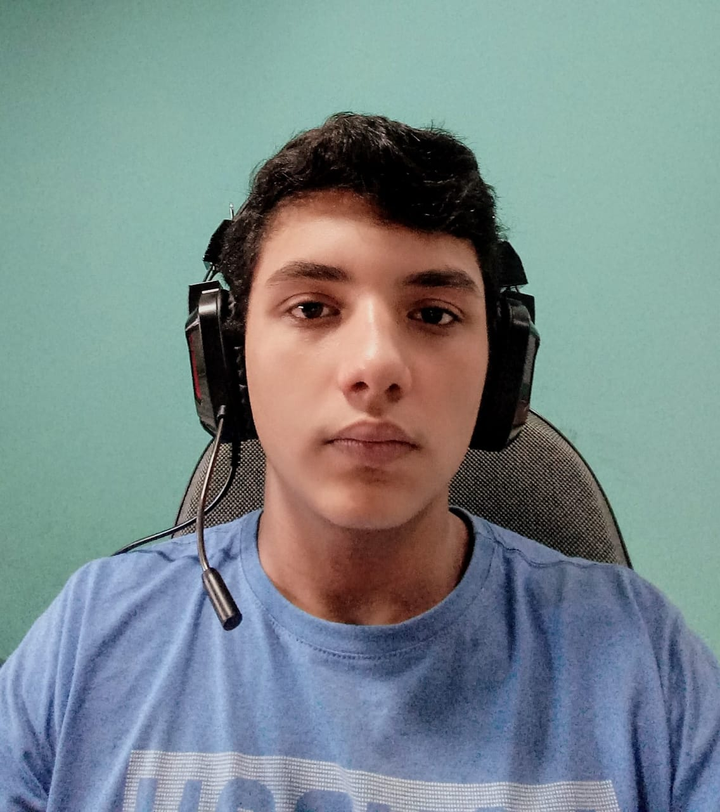
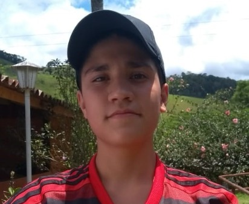

Quiénes somos
¡Hola!
Somos Hugo, Maurício y Gabriel, estudiantes de la secundaria del colegio CEFET-RJ, campus Nova Friburgo, donde hacemos el curso Técnico en Informática. En este trabajo, nosotros buscamos presentar las bellísimas festividades valencianas, Las Fallas, en formato online por medio de una página web hecha por nosotros.

